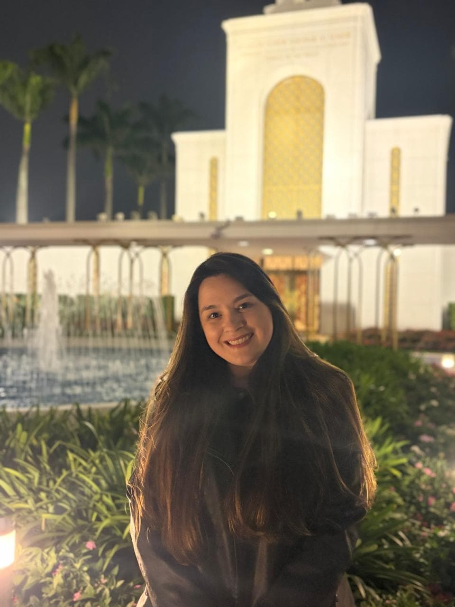

Olá! Meu nome é Michelle Barbosa Rodrigues Amorim e moro em São Bernardo do Campo, São Paulo. Estou animada para aprender mais sobre programação e tecnologia e desenvolver novas habilidades na criação de páginas web.